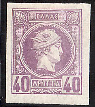
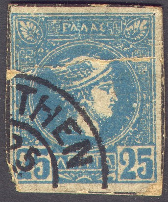
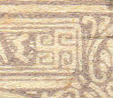

Return To Catalogue - Greece Large Hermes Head issues (1861) - Cancels on the first issues - Forgeries of the Large Hermes Head issue - Greece overview
Note: on my website many of the
pictures can not be seen! They are of course present in the
catalogue;
contact me if you want to purchase the catalogue.
Imperforated


1 l brown 2 l brown 5 l green 10 l orange 20 l red 25 l blue 25 l lilac (1893) 40 l violet 40 l blue (1893) 1 D grey Perforated (1891)
1 l brown 2 l brown 5 l green 10 l orange 20 l red 25 l blue 25 l lilac 40 l violet 40 l blue 50 l green 1 D grey

Belgian print, as is obvious from the presence of the Belgian
"ATELIER DU TIMBRE" chop.
Specialists distinguish a Belgian print (1886, imperforate, perforated 13 1/2 or 11 1/2) and an Athens print (1889 less well done, imperforate, perforated 13 1/2 or 11 1/2). The Athens print is in general cheaper.
Value of the stamps |
|||
vc = very common c = common * = not so common ** = uncommon |
*** = very uncommon R = rare RR = very rare RRR = extremely rare |
||
| Value | Unused | Used | Remarks |
| Imperforate, cheapest type | |||
| 1 l | c | c | |
| 2 l | * | * | |
| 5 l | * | c | |
| 10 l | *** | c | |
| 20 l | ** | c | |
| 25 l blue | *** | c | |
| 25 l lilac | ** | c | Athens printing only |
| 40 l violet | R | *** | |
| 40 l blue | *** | ** | Athens printing only |
| 50 l | *** | ** | Paris printing only |
| 1 D | R | ** | |
| Perforated, cheapest type | |||
| 1 l | c | c | |
| 2 l | * | * | |
| 5 l | * | c | |
| 10 l | *** | * | |
| 20 l | ** | c | |
| 25 l blue | R | * | |
| 25 l lilac | ** | c | Athens printing only |
| 40 l violet | *** | *** | |
| 40 l blue | *** | ** | Athens printing only |
| 50 l | *** | ** | Paris printing only |
| 1 D | R | * | |
Surcharged (1900, imperforate or perforated)


20 l on 25 l blue 1 D on 40 l violet 2 D on 40 l violet
Value of the stamps |
|||
vc = very common c = common * = not so common ** = uncommon |
*** = very uncommon R = rare RR = very rare RRR = extremely rare |
||
| Value | Unused | Used | Remarks |
| Imperforate | |||
| 20 l on 25 l | * | * | |
| 1 D on 40 l | *** | *** | |
| 2 D on 40 l | RR | RR | |
Perforated 11 1/2 |
|||
| 20 l on 25 l | *** | ** | |
| 1 D on 40 l | R | *** | |
| 2 D on 40 l | RR | RR | |
| Perforated 13 1/2 | |||
| 1 D on 40 l | RR | RR | |
| 2 D on 40 l | *** | *** | |
Surcharged with value and 'A M' (1900, imperforate or perforated) 25 l on 40 l violet 50 l on 25 l blue
Value of the stamps |
|||
vc = very common c = common * = not so common ** = uncommon |
*** = very uncommon R = rare RR = very rare RRR = extremely rare |
||
| Value | Unused | Used | Remarks |
| Imperforate | |||
| 25 l on 40 l | *** | *** | |
| 50 l on 25 l | *** | *** | |
Perforated 11 1/2 |
|||
| 25 l on 40 l | *** | *** | |
| 50 l on 25 l | *** | *** | |
Click here for cancels on this issue.


Two stamps with "SPECIMEN" overprint
A certain Alisaffi made forgeries of these stamps, which were later also sold by Fournier.
I've been told that the next stamps are forgeries, I have no further information. If anybody has information about forgeries of this issue, please contact me!

This 'stamp' printed on very thick paper looks like postal
stationary or a forgery, but it is not. Actually, this is a cut
from an 'educational card' with 'THE MAIL IN GREECE' illustrated
with four images of stamps of which this is one. It was produced
by Manning in Chicago, producer of teas, coffees, spices, baking
powder, flavoring extracts etc. (probably given for free with one
of their products?).
Fournier forgeries:


Fournier forgeries as they can be found in 'The Fournier Album of
Philatelic Forgeries', here with 'FAUX' overprint
The ornament to the right of the right of the 'S' is different from the genuine stamps in the Fournier forgeries:


This forgery was also found in the Fournier Album, it might
actually be a Alisaffi forgery.
Postal forgeries (to deceived the post office) exist of the values 20 l (12 varieties according to the Serrane guide), 25 l, 40 l, and 1 D. They have different dimensions when compared to the genuine stamps. Also, the design is different.

Postal forgeries. The 'S' has the
bottom left part too small and appears to be slanting backwards.
The third stamp appears to be a different type(?).
The book 'Die Postwertzeichen von Griechenland' by A.E.Glasewald (1896, available online from http://www.archive.org) describes seven different types postal forgeries of the 20 l, two types of the 25 l and one type of the 1 D value.


{kind=link}
{kind=link}